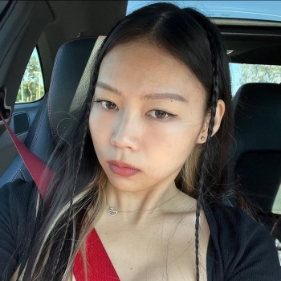
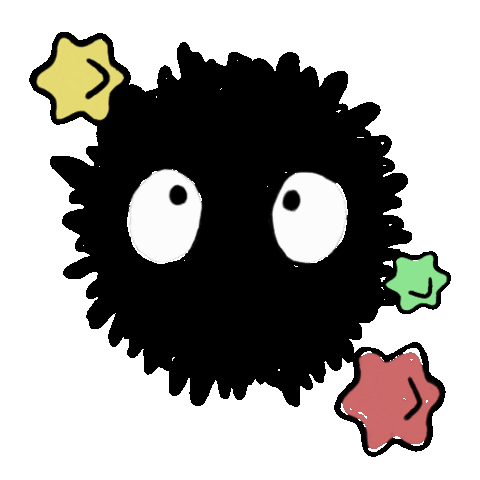
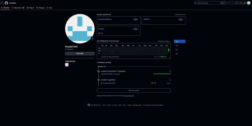
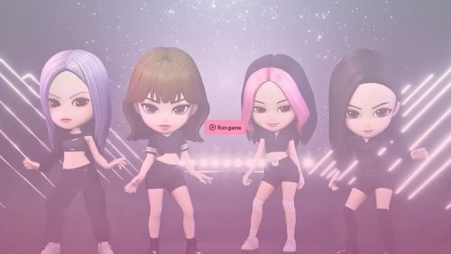
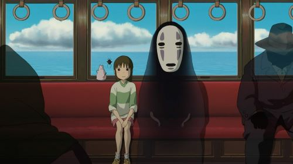
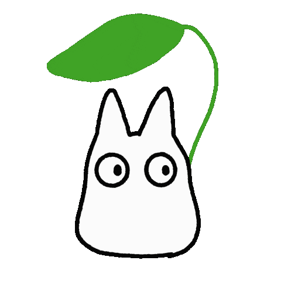

.•*Hello and welcome to my world💻I'm Krystal and let me introduce myself to you🎮Click on about me.ᐟ*•.

✦About Me✦
Name: Krystal Jaylin Anh Phan
Description: Hello! I am currently pursuing a Computer Science major at Cal State Fullerton. I am expanding my knowledge and skills in a variety of programming languages and technologies, including C++, Python, JavaScript, Unity, and Pygame. I am passionate about gaming development and cyber security, and I am excited to further develop my expertise in these areas.
Background & Interests: I spend a significant amount of my time exploring new games and honing my skills by playing them. My passion for this field was sparked by my father, who is also a software developer. He introduced me to how games work, and I quickly developed a deep interest in game development. I am 24 years old and working on various side projects that I hope to share with the world in the future. Outside of coding, I enjoy gaming, staying active at the gym, traveling, listening to K-pop, attending concerts, cooking, and spending quality time with friends and family—especially when designing games in Unity.
✰ ✰ ✰Fun Fact: I actually got to dance with my favorite Kpop group on stage this year! YES! I danced with 𝐸𝑁𝐻𝑌𝑃𝐸𝑁! Skip to 1:15✰ ✰ ✰
✗♡ Enhypen Dream Stage ✗♡Educations & Skills:
─────⋆⋅☆For more details about me, check out my resume☆⋅⋆─────
✦My Resume✦✦Python
✦C++
✦JavaScript
✦HTML
✦CSS
✦React
✦Next.js
✦Tailwind CSS
✦Node.js
✦Express
✦Django
✦ASP.NET
✦MySQL
✦MongoDB
✦Oracle Database

These are some of the projects and assignments I've completed for school. While they are smaller in scope, I plan to create more exciting and impactful projects in the future! I also have a few group projects available on my GitHub if you're interested!
Github Mini Projects
Have you heard of Blackpink? They are one of my all-time favorite Kpop groups, and I was inspired to create a small, fun game dedicated to them!
✦•┈๑⋅⋯ ⋯⋅๑┈•✦
Description: The game is inspired by "Flappy Bird," offering players the choice of different levels, each featuring a different member of Blackpink along with their songs. The challenge grows as players must navigate through obstacles, with the rocks speeding up and becoming more complex with each level!
➤Level 1: Jennie᧔•᧓
➤Level 2: Roseʚɞ
➤Level 3: Lisa⋆˚⟡˖ ࣪࣪
➤Level 4: Jisoo❀
Music Credit: Teddy Park
BLΛƆKPIИK WORLD
One of my favorite animation studios is Studio Ghibli. Known for their incredible contributions to the world of film, Hayao Miyazaki and Isao Takahata have created timeless classics like Spirited Away, My Neighbor Totoro, Ponyo, and Howl’s Moving Castle, among many others. Their masterful storytelling and artistry have deeply inspired me, leading me to create a small game in celebration of their remarkable work.
✦•┈๑⋅⋯ ⋯⋅๑┈•✦
Description: This is a simple platform game where you play as a sprite! Each level presents new challenges to overcome, and the goal is to reach the end with ease. Enjoy the Music as well!
Music Credits: Joe Hisaishi
𓏲 ๋࣭ ࣪˖🎐Spirited Safe🎐༘༄Email: Krystalaphan@gmail.com
⟡GitHub: Github.com/Krystalanh
⟡LinkedIn: Krystal Anh Phan
